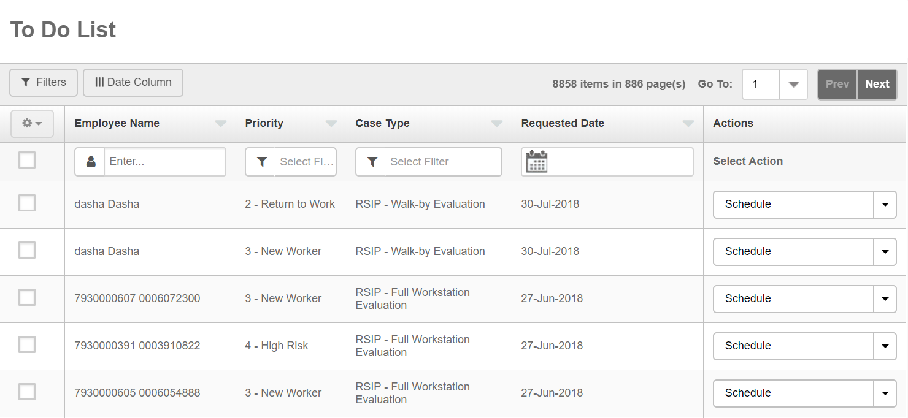
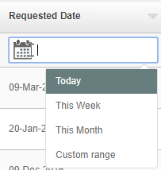
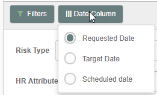
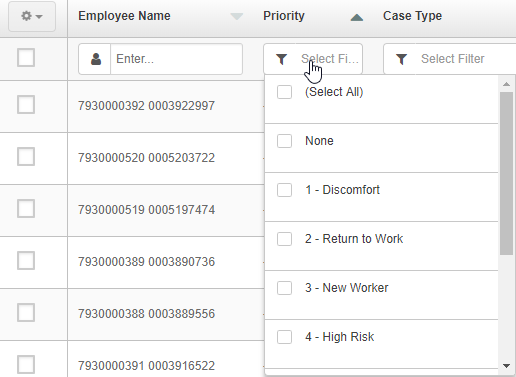
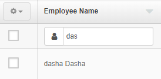
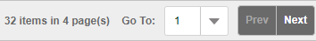
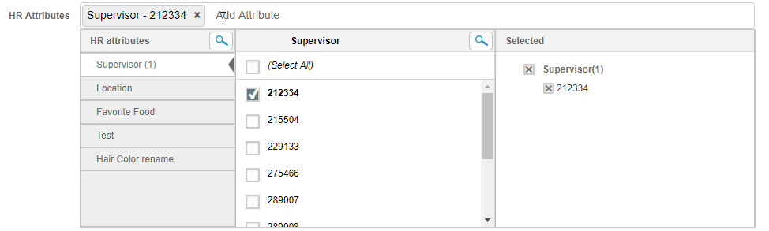
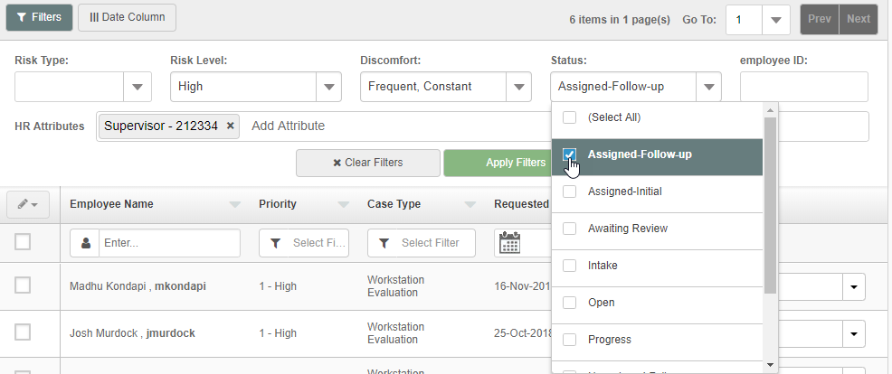

Case Manager provides a personalized To Do List based on the user's role and permissions. HR attributes also define which employee cases are visible to the user. For example, Case Manager can be configured so that a person in your organization who is responsible for scheduling evaluation appointments in one location will only see cases in their To-Do List that 1) need to be scheduled and 2) apply to employees in that location.
Once logged into Case Manager, the To Do List displays the Cases assigned to you.
The standard case information displayed in the table includes:
Employee Name
Priority
Case Type
Date
Actions

You may filter on one or more columns to find cases meeting your criteria. Enter or select the criteria in the box directly below the column head.
The Date column can be filtered for Today, This Week, This Month or a Custom Range.

You can personalize the Date column display to show the Requested Date, Target Date or Scheduled Date, according to what you need to do. Select the Date Column button and choose the option you want.

Actions: In the Action column, the next best action for a case is shown by default. You may choose a different action if desired.
To initiate an action:
To cancel cases:
To set column filters:
Click the filter box at the top of the column and select one or more options from the list.

To search cases for a specific employee:
Enter the user name in the box and press Enter.

The number of results is shown at the top of the page. You can navigate by result page.

To sort by one or more columns:
Click the arrow in the header to select the order (ascending to descending).
Add advanced filters:
Additional filters are available at the top of the page
Click the Filters button.
The advanced filters section is displayed. Filters include:
Risk Type: Overall risk or specific risk type
Risk Level: High, Moderate, Low
Discomfort: Constant, Frequent, Infrequent, Never
Status: Case status
Employee id
HR Attributes: Add any HR attributes that you want to filter on. For example, you may filter by Supervisor or Location. To set an HR Attribute filter click in the HR Attributes box to show available attributes. You can type a few letters of the attribute type to search. Select the attribute and value to filter by.

After selecting your filters select Apply Filters to view results.

To edit a filter:
To remove all filters: